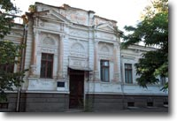
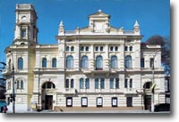

-

Херсонская общественная библиотека, 1897 год.
Адрес: ул. 21 Января 24. Библиотека была построена по ходатайству дирекции общественной библиотеки, в то время находящейся в помещении Дворянского собрания. В 1984 году городское управление выделило место и денежное пособие и в период с 1896 по 1897 год было построено здание библиотеки. Сегодня в нем располагается городской загс.
-

Здание Арсенала, 1784 год
Адрес: ул. Перекопская, 10. При ремонте здания арсенала в 1971 году была найдена медная закладная доска с надписью: «Оружейная в Херсоне Палата Заложена лета господня: 1784 августа в 8 день. Екатерина II Основательница Града Августейшая Благочестивая Благоденствующая Великая Россов обладательница
-

Очаковские (Западные) ворота , конец XVIII в.
Адрес: Юго-западный угол парка им. Ленинского Комсомола, район кинотеатра Юбилейный До наших дней от архитектурного ансамбля Херсонской крепости сохранились лишь Очаковские и Московские ворота с примыкающими к ним бастионами, один из крепостных колодцев, здание арсенала, пороховой погреб, Екатерининский собор с колокольней.
-

Московские (Северные) ворота , конец XVIII в.
Адрес: Северо-восточный угол парка им. Ленинского Комсомола, район пл. 40 лет Октября Памятник архитектуры национального значения. Охр. № 719. Они полностью идентичны Очаковским воротам. Названы по направлению дорог, ведущих из Херсонской крепости на Очаков и на Москву или Петербург (второе название Московских ворот – Санкт-Петербургские)
-

Дом купца Медведева, 1900 г.
Адрес: ул. Петренко, 6 / пер. Доры Любарской. Памятник архитектуры местного значения. Охр. № 12221. Об этом здании информация встречается крайне редко. Дом построен в 1900 г . как жилой в формах эклектизма с элементами классицизма и рококо. С 1957 г. в этом доме размещается Государственный архив Херсонской области
-

Городская больница имени Афанасия и Ольги Тропиных, 1914 г.
Адрес: ул. Комарова, 2. В топонимике Херсона "Тропинка" - знаковое понятие, примета 20 века, как Потёмкинский сквер - визитная карточка 19 столетия. Военное, Мельницы, Сухарное, Забалка, Суворовская, Тропинка - эти названия неотделимы от Херсона. Городская больница имени Афанасия и Ольги Тропиных, сооружённая на средства их наследников", расположенная на северо-западной стороне города, где некогда находились морские казармы и госпитальные бараки, принявшие раненных солдат и матросов с театра Крымской войны, осады Севастополя в 1854-55 годах
-

Городская Дума
Адрес: ул. Ленина, 34. На перекрестке улиц Коммунаров и Ленина привлекают внимание несколько выдающихся памятников старины. Среди них - дом, построенный в 1904-1905 годах для Городской Думы. В его архитектуре ощущаются мотивы ренессанса: он в самом деле напоминает средневековые ратуши. С 1978 года в его стенах находится экспозиция Херсонского художественного музея им. А. А. Шовкуненко
-

Ночлежный дом Фальц-Фейнов
Адрес: пр. Ушакова, 16. В доме № 16 в конце XIX века находился ночлежный дом, сооруженный на средства семьи Фальц-Фейнов. Не подтверждена документально история о том, что в конце августа 1891 года сюда был доставлен писатель Максим Горький, зверски избитый крестьянами в селе Посад-Покровское за попытку заступиться за женщину. После выздоровления Горький через Алешки отправился в Крым
-
Городская почтовая контора
Адрес: ул. Горького, 54. Вероятно, здание для городской почтовой конторы было построено в 1830 году. В его архитектуре были использованы килевые арки в оконных проемах как элементы татарской архитектуры, специфичной для Северного Причерноморья. До этого херсонская почта находилась на улице Суворовской, в доме, где жил Джон Говард, а еще ранее - на Эрделевской, в доме адмирала Сенявина.